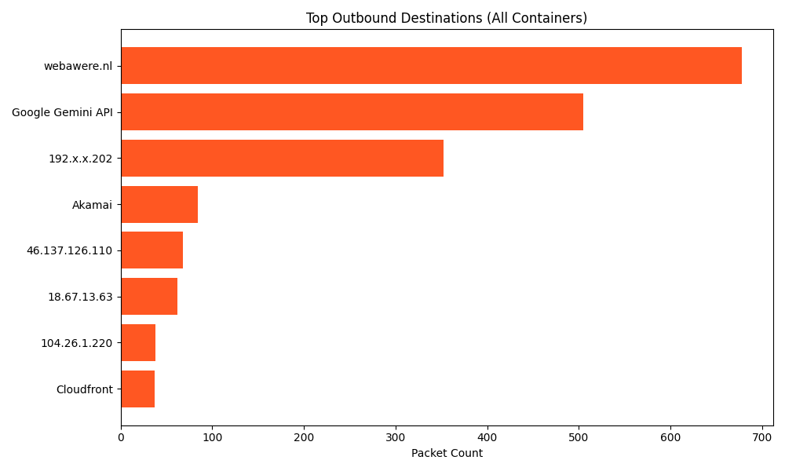
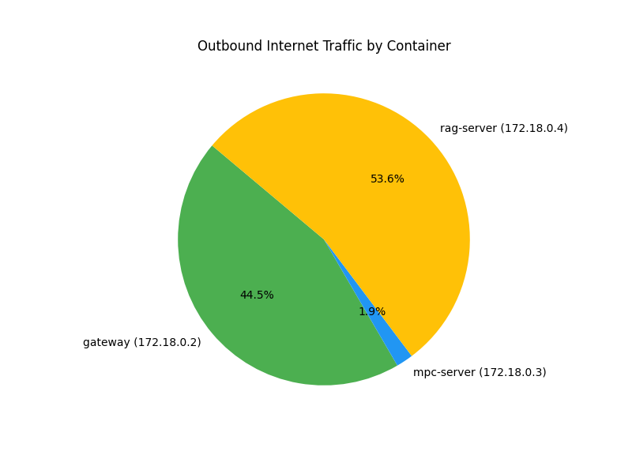

"No telemetry" is easy to write and hard to check. So we checked it the way you would: we recorded every packet on a Debian 12 laptop running the IDEAgent package, once with the plugins disabled and once while using the agent, and traced each connection to the component that opened it. The script, the cleaned logs and the code that cleaned them are published below, so you can check our work or run the same test yourself.
Scope: the IDEAgent package — IDE Gateway Plugin, RAG File Watcher, Gateway, MCP Server, RAG Server and ChromaDB.
The IDEAgent environment consists of three primary containers. Here is every outbound connection they make, and why:
| Component | IP Address | Destination | What it is |
|---|---|---|---|
| Gateway | 172.18.0.2 |
Google LLC (e.g., generativelanguage.googleapis.com) | Expected proxy traffic to external LLM providers. The Gateway container acts as the designated proxy for external LLM inference. Use Ollama and this goes away. |
| MPC-Server | 172.18.0.3 |
HuggingFace (Cloudfront) | A brief initialization ping for ETag/metadata checks for the local all-MiniLM-L6-v2 model. No user data or prompts are transmitted. Can be air-gapped by setting HF_HUB_OFFLINE=1 and TRANSFORMERS_OFFLINE=1. |
| RAG-Server | 172.18.0.4 |
Dynamic external domains (e.g., webawere.nl) | Web Search Fallback Mechanism. Queries DuckDuckGo and scrapes top URLs to ingest missing context when local retrieval confidence is low. Not hardcoded telemetry. |
The traffic footprint is deterministic and entirely explainable by its architectural design. By applying the provided hardening flags, organizations can enforce strict data residency and network isolation.
tshark and shell scripts to capture network logs, docker network data, and system logs.Visualizes the top external IP/Domain destinations contacted by the containers.

Visualizes the volume and distribution of outbound network traffic originating from each specific container.

The original logs and analysis data collected during the test are available as a single archive for easy download and scanning.
The RAG Server stores the local index of your code, learnings and docs in ChromaDB.
ChromaDB is a third-party database, and it ships with its own anonymized product
telemetry (sent to PostHog), controlled by the ANONYMIZED_TELEMETRY setting.
This section shows what ChromaDB does on the network inside the IDEAgent package.
The recorded test run, edited.
For each image: the exact version and digest, the Docker Scout findings and what we decided about each one, and the full dependency list.
| Image | Version · digest | Scout findings (C / H / M / L) | Decisions | Dependencies / SBOM |
|---|---|---|---|---|
| Gateway | latest (Nov 2026) |
0C / 0H / 0M / 0L | No vulnerable packages detected | - |
| MCP Server | latestdigest: 2a118346aae0 |
0C / 0H / 0M / 0L | No vulnerable packages detected | 218 packages |
| RAG Server | latest (Sep 2026) |
3C / 14H / 47M / 7L | Work in progress (pending base image update) | - |
git, sudo and docker commands always ask, even in Auto mode. Human-in-the-loop →What this capture proves, and what it doesn't: